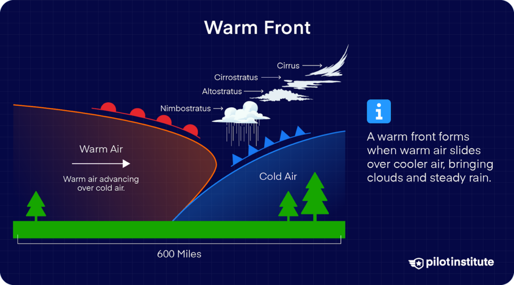
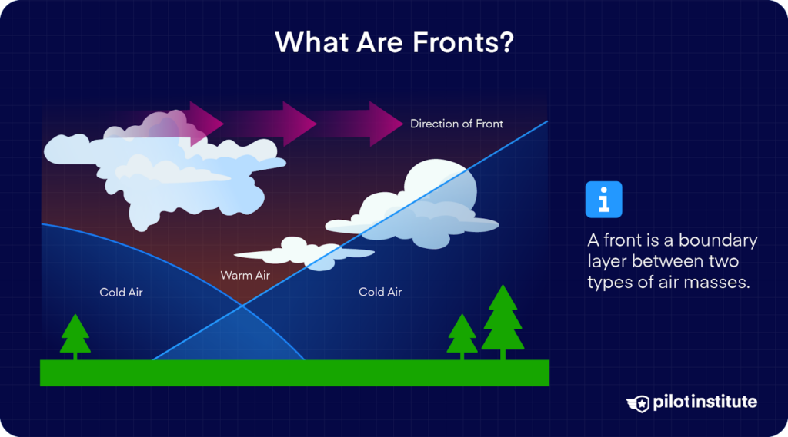
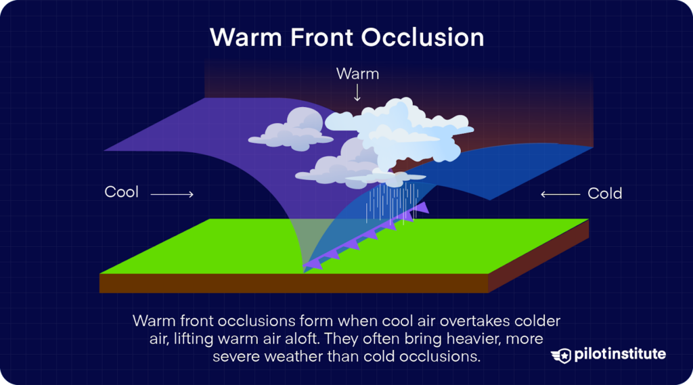

Fronts act like boundaries between air masses with different temperature or/and moisture in its surface, that triggers rain, storms, and clouds. There are different types of fronts, the cold and warm font, the stationary front, and occluded front, all these fronts have a unique thing that is their temperature. A front is when two air masses meet, a cold front is faster and is when a cold air mass is replacing a warm air mass, the warm front is slower and is when a warm air mass replaces a colder air mass, the stationary front does not move and is when the force of both air masses are equivalent, and the occluded front is when in the stationary front both air mass combine, they mix together.


